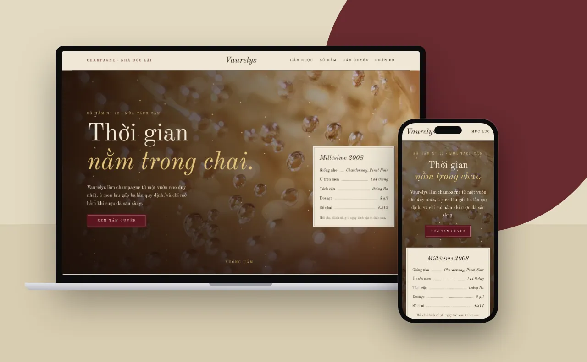

Website
Website đa ngôn ngữ cho doanh nghiệp xuất khẩu: làm sao để bên mua nước ngoài tin và hỏi giá
Với doanh nghiệp xuất khẩu, website thường là nơi bên mua nước ngoài đánh giá bạn trước cuộc gọi đầu tiên. Bài này đi qua những quyết định quan trọng khi làm website đa ngôn ngữ: ngôn ngữ nào, cấu trúc ra sao, nội dung gì để khách B2B gửi yêu cầu báo giá.

Một xưởng hạt điều ở miền Tây nhận được email hỏi hàng từ một nhà nhập khẩu châu Âu. Việc đầu tiên bên mua làm là mở website của xưởng. Nếu họ thấy một trang tiếng Việt với nút "English" dẫn tới bản dịch máy lủng củng, không có quy cách đóng gói, không có thông tin chứng nhận, cuộc trao đổi rất có thể dừng ở đó. Bên mua B2B có nhiều lựa chọn, và họ loại nhà cung cấp rất nhanh.
Website đa ngôn ngữ cho doanh nghiệp xuất khẩu vì vậy không chỉ là việc dịch chữ. Nó là bộ hồ sơ năng lực trực tuyến, viết đúng ngôn ngữ và đúng điều bên mua cần biết. Trang thiết kế website song ngữ, đa ngôn ngữ của Dream Labs đã nói về thiết kế và quy trình làm; bài này đi sâu vào phần riêng của doanh nghiệp xuất khẩu: nội dung B2B, hỏi giá và SEO quốc tế.
Chọn ngôn ngữ theo thị trường, không theo cảm tính
Tiếng Anh gần như luôn cần, vì là ngôn ngữ làm việc chung của thương mại quốc tế. Các ngôn ngữ khác nên chọn theo thị trường bạn đang bán hoặc có kế hoạch cụ thể. Ví dụ doanh nghiệp đồ gỗ có đối tác Nhật nên ưu tiên tiếng Nhật; doanh nghiệp nông sản bán sang Hàn Quốc nên có tiếng Hàn.
Câu hỏi để quyết định: khách ở đó có đọc tiếng Anh thoải mái không, và bạn có người trả lời email bằng ngôn ngữ đó không. Bắt đầu với tiếng Việt và tiếng Anh thật tốt, thêm ngôn ngữ khi có thị trường rõ ràng, thường hợp lý hơn làm năm ngôn ngữ cùng lúc.
Cấu trúc đường dẫn và thẻ hreflang
Mỗi ngôn ngữ một thư mục riêng
Cách phổ biến và dễ quản lý là đặt mỗi ngôn ngữ trong một thư mục trên cùng tên miền: /en/ cho tiếng Anh, /ja/ cho tiếng Nhật, /ko/ cho tiếng Hàn. Mỗi trang có đường dẫn riêng ở từng ngôn ngữ, ví dụ /en/products/cashew-nuts/. Cách này giúp toàn bộ website dùng chung uy tín của một tên miền, cài đặt và theo dõi trong Google Search Console cũng đơn giản.
Điều cần tránh là đổi ngôn ngữ bằng nút bấm mà đường dẫn giữ nguyên. Khi đó Google chỉ thấy một phiên bản, các bản dịch gần như vô hình với người tìm kiếm ở nước ngoài.
Khai báo hreflang
Thẻ hreflang cho Google biết các trang là bản dịch của nhau và trang nào dành cho ngôn ngữ nào, để khách Nhật thấy bản tiếng Nhật, khách Mỹ thấy bản tiếng Anh. Mỗi phiên bản phải khai báo đủ các phiên bản còn lại, kể cả chính nó, và nên có một phiên bản mặc định (x-default) cho khách không khớp ngôn ngữ nào. Thẻ hreflang hay bị sai khi thêm trang mới mà quên khai báo, nên cần được CMS sinh tự động thay vì nhập tay.
Không tự chuyển trang theo vị trí
Tự động đẩy khách sang một ngôn ngữ theo địa chỉ IP dễ gây khó chịu, và có thể khiến công cụ tìm kiếm không đọc được đủ các phiên bản. Cách tốt hơn là gợi ý ngôn ngữ và để khách tự chọn, nút đổi ngôn ngữ luôn hiện rõ ở đầu trang.
Dịch chuyên nghiệp hay máy dịch
Máy dịch và AI dịch đủ tốt để làm bản nháp nhanh. Nhưng bên mua đọc bằng tiếng mẹ đẻ nhận ra ngay câu văn gượng, thuật ngữ sai. Với ngành có thuật ngữ chuyên môn như thủy sản, nông sản, cơ khí, một chữ dịch sai trong bảng thông số có thể gây hiểu nhầm về quy cách hàng.
Cách làm cân bằng chi phí và chất lượng:
- Chuẩn bị bảng thuật ngữ: tên sản phẩm, tên quy cách, tên thương hiệu nào dịch, nào giữ nguyên.
- Dùng AI dịch bản nháp theo bảng thuật ngữ đó.
- Người thạo ngôn ngữ đích, tốt nhất là người bản ngữ có hiểu ngành, đọc và sửa.
- Người trong công ty kiểm tra lại số liệu, thông số, điều kiện thương mại sau khi dịch.
Nội dung bên mua B2B cần thấy
Bên mua chuyên nghiệp đến website để trả lời một câu hỏi: nhà cung cấp này có làm được đơn hàng của tôi không. Nội dung nên giúp họ trả lời nhanh:
- Catalogue sản phẩm: ảnh rõ, tên gọi theo cách thị trường đích quen dùng, có bản PDF tải về để chuyển cho đồng nghiệp.
- Thông số kỹ thuật (spec): kích cỡ, phân loại, độ ẩm, quy cách đóng gói, trọng lượng mỗi thùng, hạn sử dụng, tùy ngành.
- Năng lực sản xuất: nhà xưởng, quy trình, sản lượng có thể đáp ứng, thời gian sản xuất. Ảnh thật quan trọng hơn ảnh minh họa.
- Chứng nhận: các chứng nhận chất lượng, an toàn, nguồn gốc doanh nghiệp thực sự có và còn hiệu lực, kèm ảnh hoặc bản chụp. Không ghi chứng nhận chưa có.
- Điều kiện thương mại: số lượng đặt tối thiểu (MOQ), các điều kiện giao hàng theo Incoterms bạn thường làm như FOB, CIF, cảng xuất hàng, phương thức thanh toán chấp nhận.
- Hàng mẫu và đóng gói theo yêu cầu: có gửi mẫu không, có làm nhãn riêng cho bên mua không.
Thông tin pháp lý về chứng nhận, nhãn mác và yêu cầu nhập khẩu của từng thị trường khác nhau và thay đổi theo thời gian. Nội dung trên website do doanh nghiệp cung cấp và chịu trách nhiệm; nên đối chiếu với đơn vị tư vấn xuất khẩu hoặc bên mua trước khi đăng.
Form hỏi giá (RFQ), tiền tệ, đơn vị và múi giờ
Form yêu cầu báo giá
Khác với form liên hệ chung, form hỏi giá (RFQ, Request for Quotation) nên hỏi đủ để bạn báo giá được ngay: sản phẩm, quy cách, số lượng dự kiến, điều kiện giao hàng mong muốn, cảng đến, quốc gia, tên công ty, email. Nhưng đừng bắt buộc quá nhiều ô; những ô phụ nên để tùy chọn. Mỗi yêu cầu nên được báo ngay cho người phụ trách xuất khẩu qua email hoặc Zalo, kèm ngôn ngữ khách đã dùng để chọn người trả lời phù hợp.
Tiền tệ và đơn vị
Phần lớn doanh nghiệp B2B không công khai giá vì giá thay đổi theo số lượng và điều kiện giao hàng. Nếu muốn ghi giá tham khảo, nên dùng đồng tiền thị trường quen dùng như USD hoặc EUR, ghi rõ kèm điều kiện giao hàng. Đơn vị đo cũng cần nhất quán: kilogram hay pound, centimet hay inch, cách viết ngày tháng, số điện thoại có mã quốc gia.
Múi giờ và thời gian phản hồi
Khách châu Âu, châu Mỹ thường gửi yêu cầu khi Việt Nam đang ngoài giờ làm. Ghi rõ giờ làm việc kèm múi giờ (GMT+7) và thời gian phản hồi dự kiến. Một email tự động xác nhận đã nhận yêu cầu, viết đúng ngôn ngữ khách dùng, cho khách biết họ không gửi vào khoảng trống.
Tốc độ cho khách ở xa và SEO quốc tế
Website đặt máy chủ ở Việt Nam có thể tải chậm với khách ở châu Âu hay châu Mỹ. Dùng mạng phân phối nội dung (CDN) để lưu bản sao gần khách hơn, nén ảnh WebP, chọn phông chữ đủ ký tự mà vẫn gọn, rồi đo tốc độ từ vị trí của thị trường bạn nhắm tới.
Về SEO, mỗi ngôn ngữ cần tiêu đề, mô tả, đường dẫn riêng, và từ khóa nghiên cứu riêng theo cách người ở thị trường đó tìm, ví dụ ghép tên sản phẩm với "supplier", "manufacturer" hay "Vietnam" trong tiếng Anh. Dịch nguyên từ khóa tiếng Việt sang thường không khớp cách họ gõ. Một số thị trường có công cụ tìm kiếm phổ biến khác Google, cần tìm hiểu thêm nếu đó là thị trường chính. Các nền tảng SEO kỹ thuật chung như sitemap, tốc độ, dữ liệu có cấu trúc vẫn áp dụng cho mọi phiên bản; xem checklist trong bài thiết kế website chuẩn SEO 2026.
Chi phí làm website đa ngôn ngữ
Tại Dream Labs, đa ngôn ngữ nằm trong gói Cao cấp Liên hệ: không giới hạn trang, tích hợp thanh toán và CRM, trợ lý AI tiếp khách trên website, bảo trì 12 tháng, thời gian 30 đến 45 ngày. Bản dịch do doanh nghiệp cung cấp, hoặc được báo giá riêng theo khối lượng nội dung và số ngôn ngữ. Nếu hiện bạn chỉ cần tiếng Việt, gói Chuyên nghiệp 18.000.000đ là đủ, phần thêm ngôn ngữ về sau được báo giá theo phạm vi.
| Gói | Giá | Thời gian | Bao gồm |
|---|---|---|---|
| Cơ bản | 8.000.000đ | 7–10 ngày4 vòng sửa | Có mặt chuyên nghiệp trên Google và điện thoại trong khoảng 10 ngày, khách tìm thấy và liên hệ được ngay.
|
| Chuyên nghiệpPhổ biến nhất | 18.000.000đ | 14–21 ngày9 vòng sửa | Website riêng đúng tầm thương hiệu, tự đăng bài để có khách từ Google lâu dài, không phụ thuộc người làm.
|
| Cao cấp | Liên hệ | 30–45 ngàyKhông giới hạn trong phạm vi | Trải nghiệm đủ khác biệt để định vị cao cấp, bán hàng và tiếp khách trực tuyến, phục vụ cả khách nước ngoài.
|
Doanh nghiệp ngành thủy sản, nông nghiệp có thể xem thêm cấu trúc gợi ý ở trang thiết kế website thủy sản, nông nghiệp. So sánh đầy đủ các gói tại bảng giá hoặc trang dịch vụ thiết kế website. Muốn trao đổi thị trường nào nên làm trước, hãy nhắn Zalo 0934 246 420.
Câu hỏi thường gặp
Doanh nghiệp xuất khẩu nhỏ có cần website đa ngôn ngữ không?
Ít nhất nên có bản tiếng Anh chỉn chu cho sản phẩm, năng lực và liên hệ. Ngôn ngữ thứ ba chỉ nên thêm khi bạn có thị trường cụ thể và người trả lời được khách bằng ngôn ngữ đó.
Dùng plugin tự dịch website có được không?
Được cho bản nháp, nhưng không nên đăng thẳng. Bản dịch máy dễ sai thuật ngữ và thông số, làm bên mua mất tin tưởng. Nên để người thạo ngôn ngữ và hiểu ngành đọc lại, nhất là trang sản phẩm.
Hreflang là gì, có bắt buộc không?
Hreflang là khai báo giúp Google hiểu các trang là bản dịch của nhau và hiển thị đúng phiên bản cho người tìm kiếm ở từng ngôn ngữ. Không bắt buộc về kỹ thuật, nhưng thiếu nó thì các bản dịch khó được xếp hạng đúng thị trường.
Website xuất khẩu có nên ghi giá công khai không?
Thường không, vì giá B2B phụ thuộc số lượng, quy cách và điều kiện giao hàng. Thay vào đó, hãy làm form yêu cầu báo giá rõ ràng và cam kết thời gian phản hồi.
Nên dùng tên miền riêng cho từng nước hay thư mục /en/, /ja/?
Với phần lớn doanh nghiệp, thư mục trên cùng một tên miền dễ quản lý và dùng chung uy tín tên miền. Tên miền riêng từng nước chỉ đáng cân nhắc khi bạn có hoạt động kinh doanh và đội ngũ riêng ở nước đó.
Bắt đầu cùng Dream Labs
Đang cần website để chào hàng thị trường nước ngoài?
Nhắn Zalo cho Dream Labs sản phẩm, thị trường nhắm tới và tài liệu tiếng Anh đang có. Chúng tôi đề xuất cấu trúc ngôn ngữ, nội dung cần chuẩn bị và báo giá rõ phạm vi.